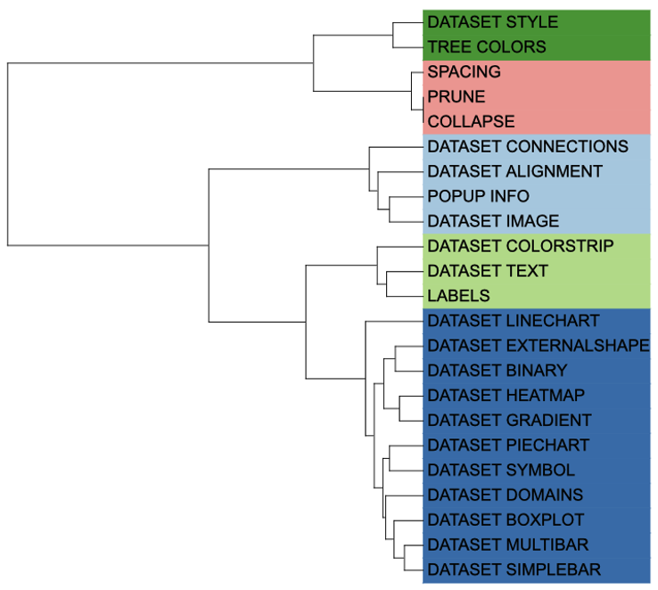
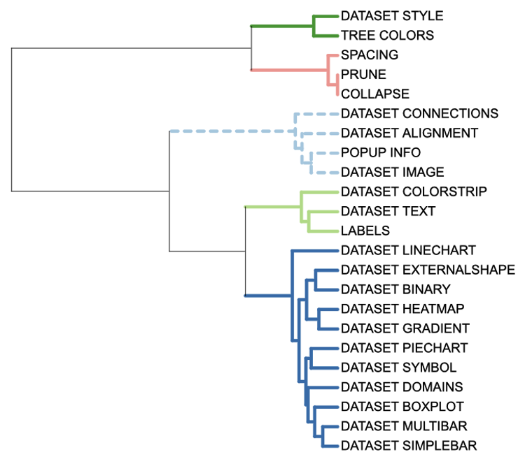
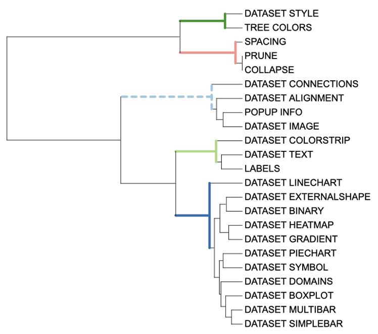
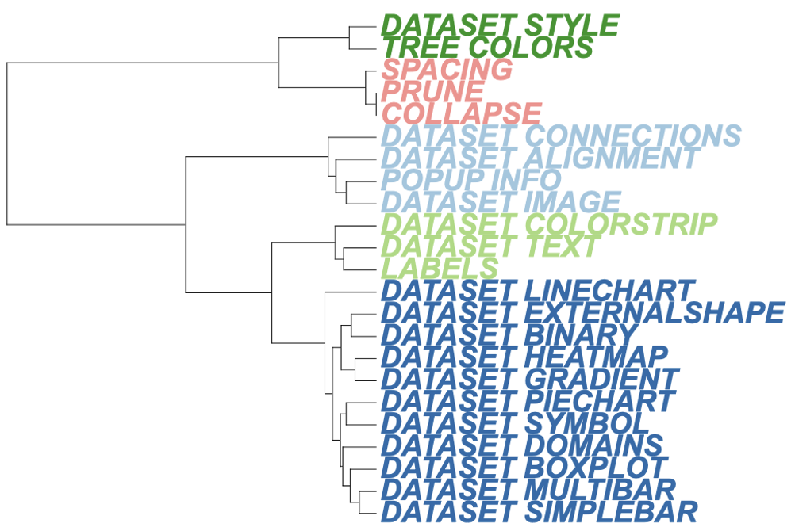
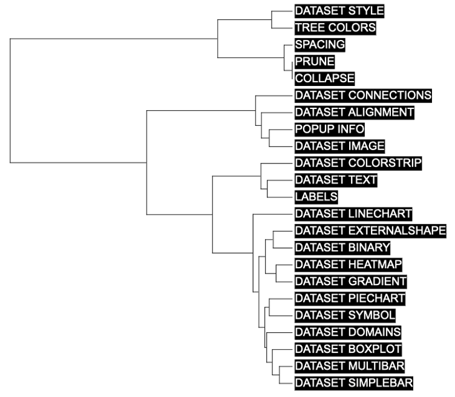

The TREE_COLORS allows you to set the style of branches
at any level. It has five attributes: “range”, “clade”, “branch”,
“label”, and “label_background”. While style parameters is simple of
TREE_COLORS, the data parameters are extremely complex. The
Style template belongs to the “Tree structure” class (refer
to the Class for detail information).
To set the style of a branch or node, users must enter the name of the branch tip or node and the attribute such as color, label, style, and size.The selected branch will then display the new styles as defined by the specified attribute. Although this function provides the most comprehensive templates for modifying tree style, its complexity in data parameters proves to be a great challenge for users.
This section shows how to use itol.toolkit to modify the style. The itol.toolkit significantly reduces the difficulty level for using iTOL by enabling automatic data recognition. Without itol.toolkit, users would have to organize various attribute parameters and their corresponding input data manually. With the itol.toolkit, the entire workflow becomes more cohesive, and users can directly output the template files once they have confirmed which data to use.
This section uses dataset 1 as an example to show how to draw the line chart. (refer to the Dataset for detail information)
The first step is to load the newick format tree file
tree_of_itol_templates.tree and its corresponding metadata
df_frequence.
library(itol.toolkit)
tree <- system.file("extdata",
"tree_of_itol_templates.tree",
package = "itol.toolkit")
hub <- create_hub(tree = tree)
data("template_groups")If the user enters all four columns, the program will figure out which is the subclass and which is the color.
We can use the “range” attribute to set color of the tip label area.
Unlike the “label_background” attribute, the “range” attribute color
action range is consistent in the area of each label. In
unit_7, we only use two columns to show hot use these
function. The attribute are fed to the subtype parameter.
Based on the input data, the create_unit function treat the
first column as tip id, and the second columns as the “range”
information (whatever the header is). Moreover, the color is also
generated by the second column of input data. Also, colors can be
defined using the color parameter. As a result, the program
has handle all possible cases automatically, lowering the threshold at
which users are preparing for input data.
unit_7 <- create_unit(data = template_groups,
key = "E007_tree_colors_1",
type = "TREE_COLORS",
subtype = "range",
tree = tree)
write_unit(unit_7)
We can use the “clade” attribute to apply color adjustments to all
branches contained in a node . Like unit_7, we used only 2
columns data to implement the “branch” attribute in unit_8.
The attribute are fed to the subtype parameter. The line
type is defined by the line_type parameter, which controls
whether the line is a dotted line or not, and here we define the
different line types as a set of vectors. The line thickness is defined
by the size_factor parameter.
In unit_8, five discrete colors are generated according
to the second column of input data, which has five groups. Colors can
also be defined using the color parameter.
df_data <- data.frame(id = unique(template_groups$group),
data = unique(template_groups$group))
unit_8 <- create_unit(data = df_data,
key = "E008_tree_colors_2",
type = "TREE_COLORS",
subtype = "clade",
line_type = c(rep("normal",4),"dashed"),
size_factor = 5,
tree = tree)
write_unit(unit_8)
We can use the “branch” attribute to adjust color of the node or tip
like “clade” attribute. However, “branch” attribute does not broadcast
these settings to its offspring branches. See unit_9
unit_9 <- create_unit(data = df_data,
key = "E009_tree_colors_3",
type = "TREE_COLORS",
subtype = "branch",
line_type = c(rep("normal",4),"dashed"),
size_factor = 5,
tree = tree)
write_unit(unit_9)
We can use “label” attribute to adjust colors and font styles at the
branch level. We also used only 2 columns data to implement the “branch”
attribute in unit_10. The font type is defined by the
font_type parameter, which controls whether the lines are
bold or italic; The font size is defined by the size_factor
parameter.
unit_10 <- create_unit(data = template_groups,
key = "E010_tree_colors_4",
type = "TREE_COLORS",
subtype = "label",
font_type = "bold-italic",
size_factor = 2,
tree = tree)
write_unit(unit_10)
We can use the “label_background” attribute to adjust the color
scheme of the label background at the branch level. We only used 2
columns of information to show how to implement the “label_background”
attribute in unit_11. Usually, the background is a uniform
color, so the color parameter defines a single color. However, you can
set different colors by entering a vector of colors. If no color was
set, itol.toolkit will automatically set colors based on
the data. In practice, it’s important to note that backgrounds often
don’t work the first time you drag them into iTOL, and you need to
switch between the ring, rectangle, and unrooted tree types to make them
work.
unit_11 <- create_unit(data = template_groups,
key = "E011_tree_colors_5",
type = "TREE_COLORS",
subtype = "label_background",
color = "#000000",
tree = tree)
write_unit(unit_11)
Of all templates, TREE_COLORS is one of the most
frequently used function and highly recommended by authors. The
itol.toolkit enables users to make fewer mistakes, and save effort in
complex function and data preparation.
IOCAS, 2575760336@qq.com↩︎
CACMS, njbxhzy@hotmail.com↩︎
IOCAS, tongzhou2017@gmail.com↩︎